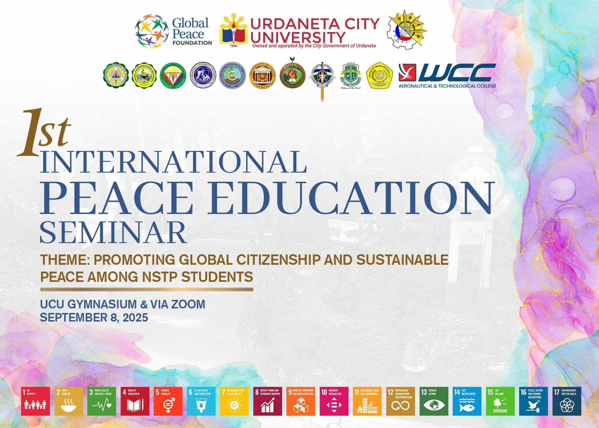
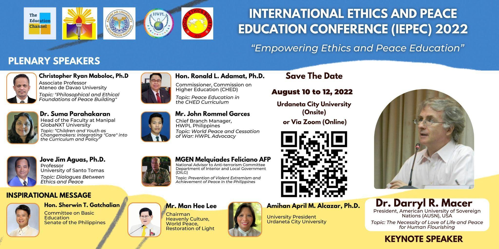
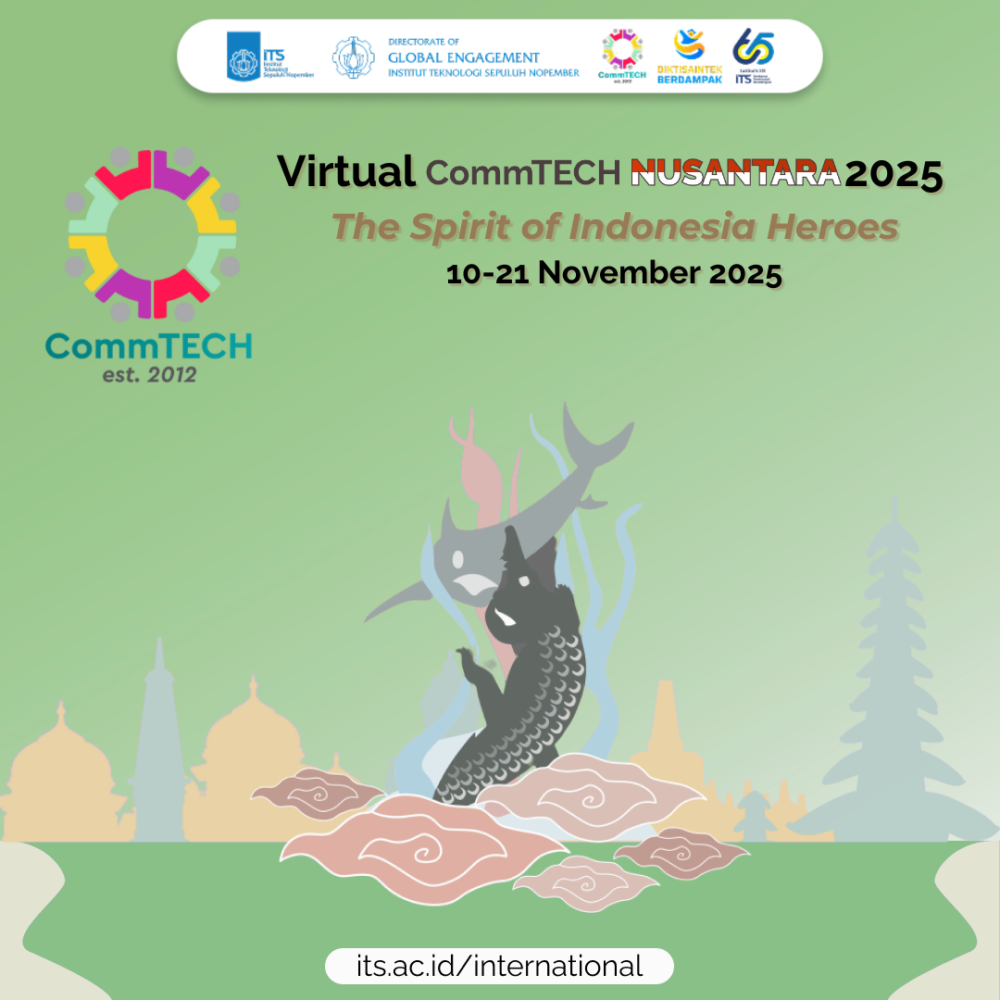
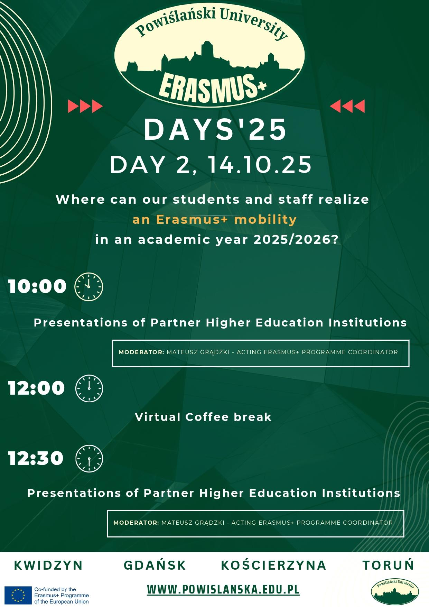
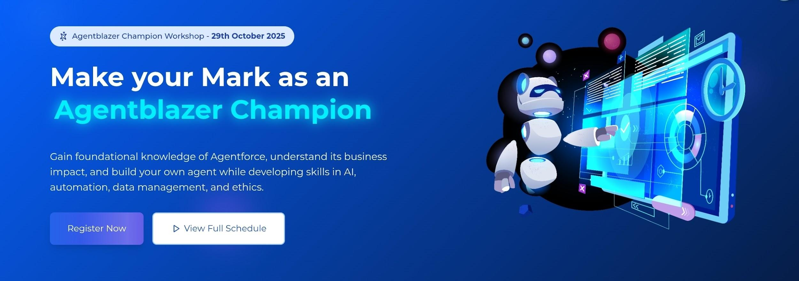
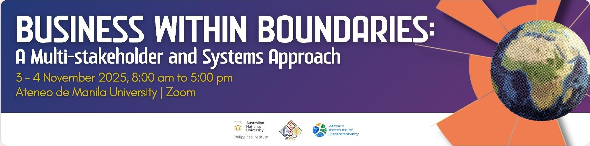
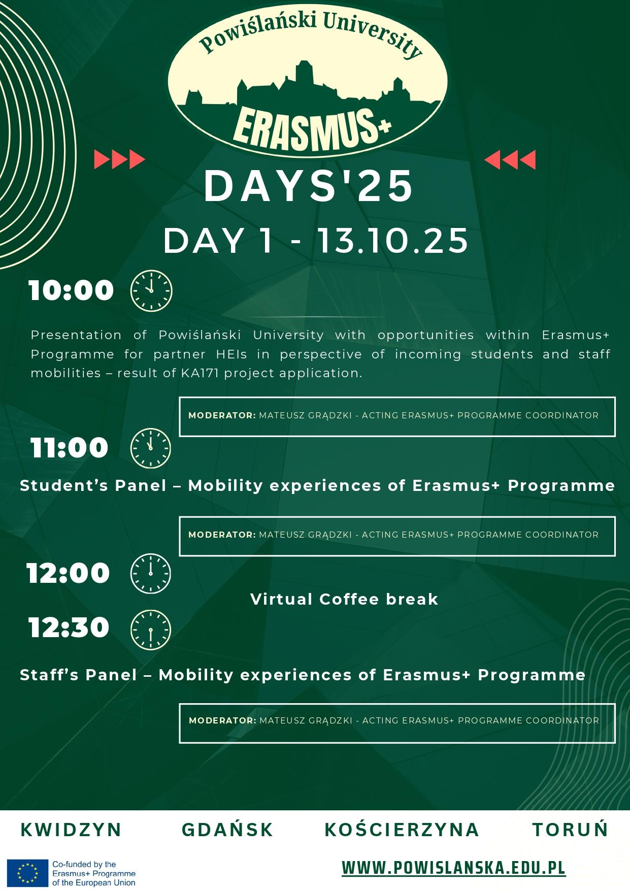
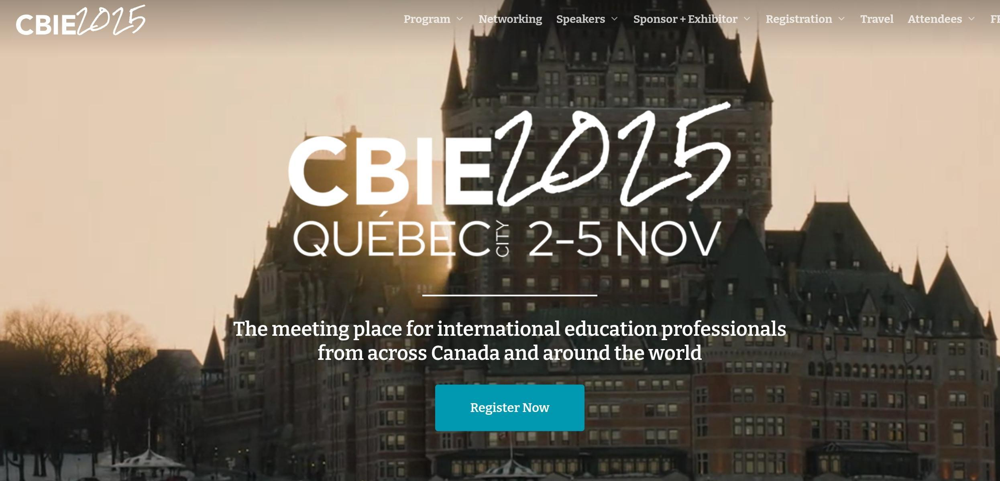

Verified registry and descriptive evidence detailing the international collaborations and sustainability programs hosted or participated in by Urdaneta City University (UCU).

In partnership with 11 universities, Urdaneta City University (UCU) led the collaboration with Don Mariano Marcos State University, Central Philippine State University, Binalatongan Community College, Virgen Milagrosa University Foundation Inc., Golden State College, Laguna State Polytechnic University, Kalinga State University, Saint Louis University–Philippines, Holy Name University, and WCC–Aeronautical & Technological College.

In celebration of Global Ethics Day and the International Day of Peace, The Education Channel (TEC), in partnership with Heavenly Culture, World Peace, Restoration of Light (HWPL) and Urdaneta City University (UCU), in collaboration with SES Mindanao and the American University of Sovereign Nations (AUSN), held the International Ethics and Peace Education Conference 2022 with the theme “Empowering Ethics and Peace Education” on August 10–12, 2022. The hybrid conference took place both on-site at Urdaneta City University, Pangasinan, Philippines, and virtually via Zoom, and was also streamed through The Education Channel’s social media platforms.


Virtual CommTECH Nusantara 2025: The Spirit of Indonesia Heroes is a short cultural program introducing global participants to Indonesia’s culture through stories of national heroes. Held from November 10–21, 2025 (19:00–22:00 WIB), it features virtual tours, language lessons, and cultural activities, ending with a Virtual Project Exhibition. Open to non-Indonesian students, staff, and faculty, the program is free for up to five participants per university, with applications due by October 24, 2025 via commtech@its.ac.id.
CommTECH Nusantara is a short international program organized by Institut Teknologi Sepuluh Nopember (ITS) that introduces participants from around the world to Indonesia’s diverse culture, traditions, and heritage. The Virtual CommTECH Nusantara 2025: The Spirit of Indonesia Heroes highlights the stories of national heroes across the archipelago through virtual tours, language and cultural activities, and creative projects. Open to non-Indonesian students, staff, and faculty, the program runs from November 10–21, 2025 (19:00–22:00 WIB) and concludes with a Virtual Project Exhibition, where participants present their innovative ideas inspired by Indonesia’s rich culture.

SmartBridge, in collaboration with Salesforce, is holding a 1 day workshop called Agentblazer Champion Workshop on October 29th, 2025 8:30am - 6:30pm PHT.Will teach on AI, Automation, Ethics, & Date management.Based in India.

The ASEAN University Network on Ecological Education and Culture (AUN-EEC), housed at the Ateneo Institute of Sustainability (AIS) and Australian National University (ANU), through its Fenner School of Environment and Society, are jointly organizing a two-day workshop entitled “Business Within Boundaries: A Multi-stakeholder and Systems Approach”. The workshop will explore a whole-of-society approach to addressing the interconnected socio-ecological impacts of human pressures on the earth system. The workshop will invite stakeholders coming from different sectors including the academe, business community, local and national government, NGOs, CSOs, and media. The workshop output will be a policy brief on the roles of different sectors towards supporting business and community ecosystems that can operate within planetary boundaries.


Partnership Mission and Participation of the Philippine Delegation to the Canadian Bureau for International Education (CBIE) 2025 Annual Conference in Quebec, Canada on 01-09 November 2025 (inclusive of travel time) is the premier gathering of international educators and stakeholders from across Canada and around the world. Guided by this year’s theme, "The Future in Focus: Advancing International Education in Times of Uncertainty,” CBIE 2025 will bring together sector leaders, practitioners, and collaborators to share knowledge, forge meaningful partnerships, and explore new ideas to bring the future of international education into focus. Further information is in the attached invitation, for your reference.
1st International Peace Education Seminar In partnership with 11 universities, Urdaneta City University led the collaboration with Don Mariano Marcos State University, Central Philippine State University, Binalatongan Community College, Virgen Milagrosa University Foundation Inc., Golden State College, Laguna State Polytechnic University, Kalinga State University, Saint Louis University–Philippines, Holy Name University, and WCC–Aeronautical & Technological College.
International Ethics and Peace Education Conference 2022 In celebration of Global Ethics Day and the International Day of Peace, The Education Channel (TEC), in partnership with Heavenly Culture, World Peace, Restoration of Light (HWPL) and Urdaneta City University (UCU), in collaboration with SES Mindanao and the American University of Sovereign Nations (AUSN), held the International Ethics and Peace Education Conference 2022 with the theme “Empowering Ethics and Peace Education” on August 10–12, 2022. The hybrid conference took place both on-site at Urdaneta City University, Pangasinan, Philippines, and virtually via Zoom, and was also streamed through The Education Channel’s social media platforms.
Virtual CommTECH Nusantara 2025: The Spirit of Indonesia Heroes The Spirit of Indonesia Heroes is a short cultural program introducing global participants to Indonesia’s culture through stories of national heroes. Held from November 10–21, 2025 (19:00–22:00 WIB), it features virtual tours, language lessons, and cultural activities, ending with a Virtual Project Exhibition. Open to non-Indonesian students, staff, and faculty, the program is free for up to five participants per university, with applications due by October 24, 2025 via commtech@its.ac.id.
CommTECH Nusantara Program Overview CommTECH Nusantara is a short international program organized by Institut Teknologi Sepuluh Nopember (ITS) that introduces participants from around the world to Indonesia’s diverse culture, traditions, and heritage. The Virtual CommTECH Nusantara 2025: The Spirit of Indonesia Heroes highlights the stories of national heroes across the archipelago through virtual tours, language and cultural activities, and creative projects. Open to non-Indonesian students, staff, and faculty, the program runs from November 10–21, 2025 (19:00–22:00 WIB) and concludes with a Virtual Project Exhibition, where participants present their innovative ideas inspired by Indonesia’s rich culture.